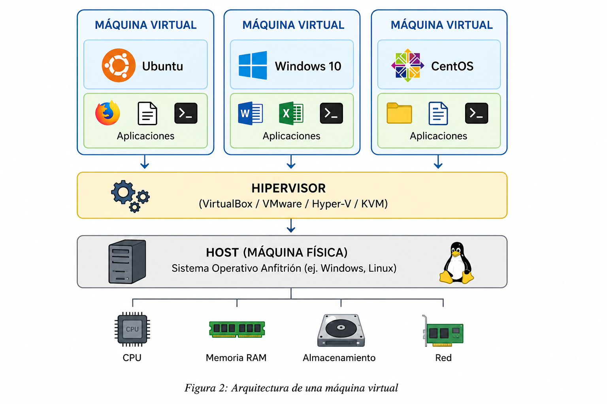

Capítulo 2. Estado del arte
Máquina virtual
Trabajo Fin de Grado - Arturo Cabello Rodriguez
Máquina virtual
Trabajo Fin de Grado - Arturo Cabello Rodriguez
La virtualización consiste en añadir una capa de abstracción sobre una máquina física que permite ejecutar múltiples sistemas operativos independientes sobre un mismo hardware. Cada uno de estos sistemas recibe el nombre de máquina virtual (Virtual Machine).
Durante los últimos años, esta tecnología ha experimentado un importante crecimiento debido a la necesidad de desplegar aplicaciones de forma rápida, optimizar el uso del hardware y reducir los costes de infraestructura. La virtualización permite separar el hardware del software, posibilitando que diferentes sistemas operativos, aplicaciones o plataformas de computación se ejecuten simultáneamente sobre un único equipo físico.

Figura 2. Arquitectura de una máquina virtual.
Es la máquina física donde se ejecuta el software de virtualización. Está formada por el procesador, memoria RAM, almacenamiento y resto de recursos hardware.
Software encargado de crear y administrar las máquinas virtuales, distribuyendo los recursos físicos entre ellas.
Ejemplos:Sistema operativo invitado que funciona de manera completamente aislada del sistema anfitrión, ejecutando sus propias aplicaciones y servicios.
Uno de los principales casos de uso de las máquinas virtuales consiste en la creación de laboratorios virtuales. Los estudiantes pueden instalar diferentes sistemas operativos, experimentar con nuevas configuraciones y realizar pruebas sin afectar al equipo físico donde trabajan.
Esta característica convierte a la virtualización en una herramienta muy utilizada en universidades y centros de investigación para la realización de prácticas de administración de sistemas y plataformas Big Data.
| Software | Tipo | Fabricante |
|---|---|---|
| Oracle VirtualBox | Hipervisor Tipo 2 | Oracle |
| VMware Workstation | Hipervisor Tipo 2 | VMware |
| Microsoft Hyper-V | Hipervisor Tipo 1 | Microsoft |
| KVM | Hipervisor Tipo 1 | Linux |
La virtualización ha supuesto una revolución en la administración de infraestructuras informáticas al permitir ejecutar múltiples sistemas operativos sobre un único equipo físico. Sin embargo, el consumo de recursos asociado a las máquinas virtuales ha impulsado la aparición de tecnologías de virtualización ligera como Docker, empleadas en este Proyecto Fin de Grado para desplegar el ecosistema Hadoop de forma más eficiente, portable y reproducible.